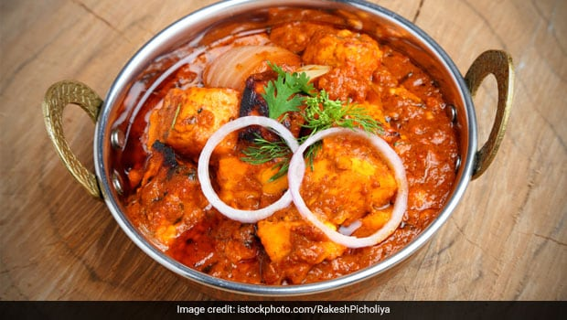

Paneer Tikka Masala

Paneer Tikka Masala is a delicious Indian dish that combines marinated and grilled paneer (Indian cottage cheese) with a rich and flavorful tomato-based gravy. Here's a recipe for Paneer Tikka Masala:
Ingredients:
- For Paneer Tikka:
- 250g paneer
- 1/2 cup thick yogurt
- 1 tablespoon ginger-garlic paste
- 1/2 teaspoon turmeric powder
- 1 teaspoon red chilli powder
- 1 teaspoon garam masala
- 1 tablespoon cumin powder
- 1 tablespoon coriander powder
- salt to taste
- 2 tablespoons oil
- skewers (wooden or metal)
- For Gravy:
- 2 tablespoons oil
- 1 onion (finely chopped)
- 1 green bell pepper (capsicum, finely chopped)
- 2 tomatoes (pureed)
- 1 teaspoon ginger-garlic paste
- 1 teaspoon red chili powder
- 1/2 teaspoon turmeric powder
- 1 teaspoon garam masala
- 1 teaspoon cumin powder
- 1 teaspoon coriander powder
- 1/2 cup heavy cream
- Salt to taste
- Fresh coriander leaves for garnish
Instructions:
- For Paneer Tikka:
- In a mixing bowl, combine yogurt, ginger-garlic paste, red chili powder, turmeric powder, garam masala, cumin powder, coriander powder, salt, and oil to make the marinade.
- Add the paneer cubes to the marinade and coat them well. Marinate for at least 1 hour in the refrigerator.
- Preheat your grill or broiler. Thread the marinated paneer cubes onto skewers.
- Grill or broil the paneer until it gets a nice char and is cooked through, turning occasionally. This should take about 10-15 minutes. You can also cook them on a stovetop grill or in a pan.
- For Gravy:
- In a separate pan, heat 2 tablespoons of oil. Add the chopped onions and sauté until they turn translucent.
- Add the ginger-garlic paste and sauté for a couple of minutes until the raw smell disappears.
- Add the chopped green bell pepper and sauté for a few more minutes until they start to soften.
- Add the tomato puree, red chili powder, turmeric powder, garam masala, cumin powder, coriander powder, and salt. Cook the mixture until the oil starts to separate from the spices.
- Stir in the heavy cream and let it simmer for a few minutes until the gravy thickens.
- Assembling:
- Remove the paneer from the skewers and add them to the tomato gravy. Simmer for a few more minutes until the paneer absorbs the flavors of the gravy.
- Garnish with fresh coriander leaves.
- Serve the Paneer Tikka Masala hot with naan, roti, or steamed rice.
Enjoy your homemade Paneer Tikka Masala!